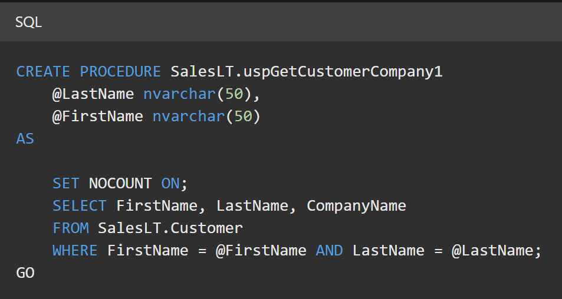
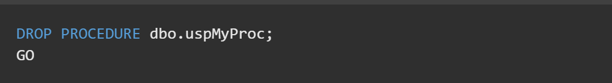

The PL/SQL stored procedure or simply a procedure is a PL/SQL block which performs one or more specific tasks. It is just like procedures in other programming languages. The procedure contains a header and a body.
Header: The header contains the name of the procedure and the parameters or variables passed to the procedure.
Body: The body contains a declaration section, execution section and exception section similar to a general PL/SQL block.
Syntax for creating procedure:
CREATE [OR REPLACE] PROCEDURE procedure_name
[ (parameter [,parameter]) ]
IS
[declaration_section]
BEGIN
executable_section
[EXCEPTION exception_section]
END [procedure_name];

Syntax for drop procedure
DROP PROCEDURE procedure_name;
